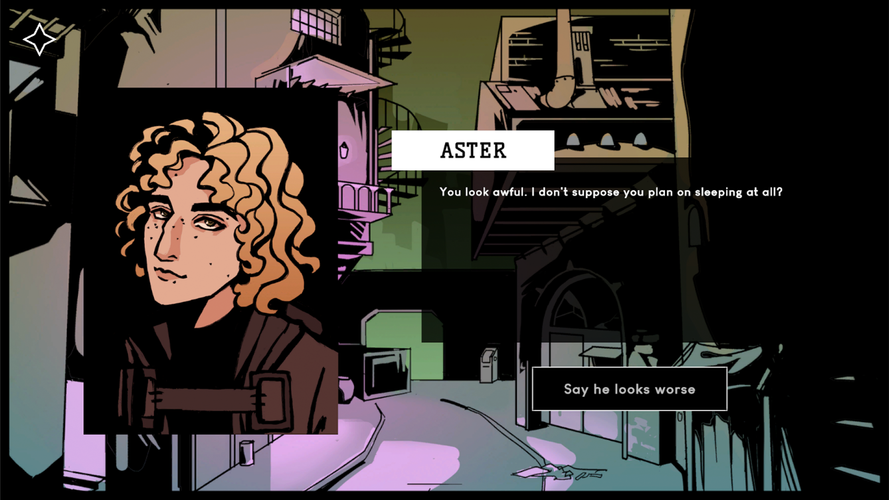
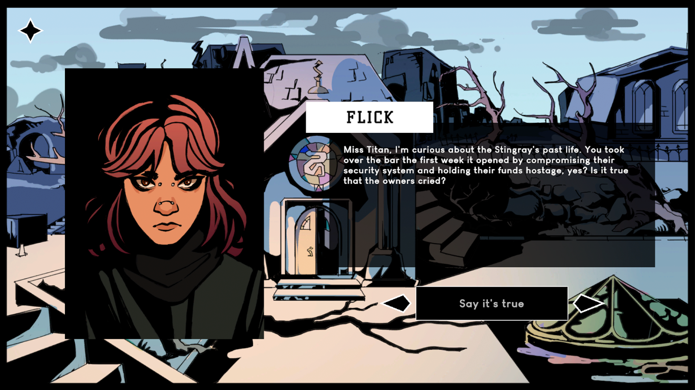
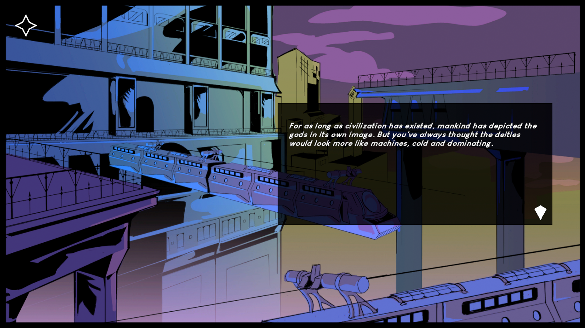
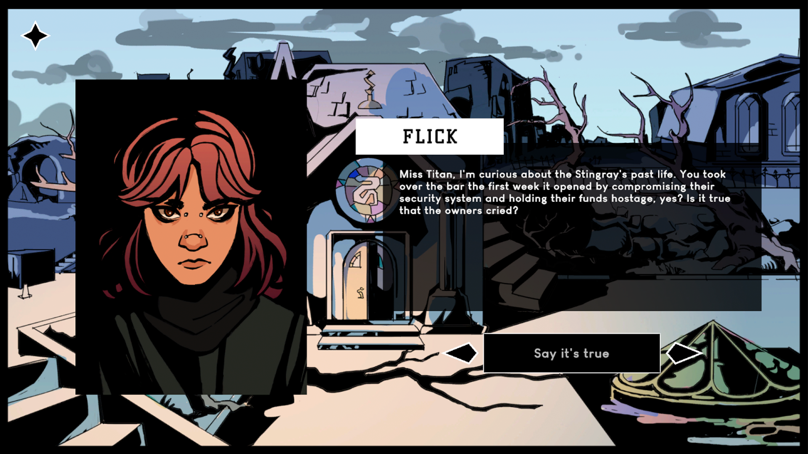
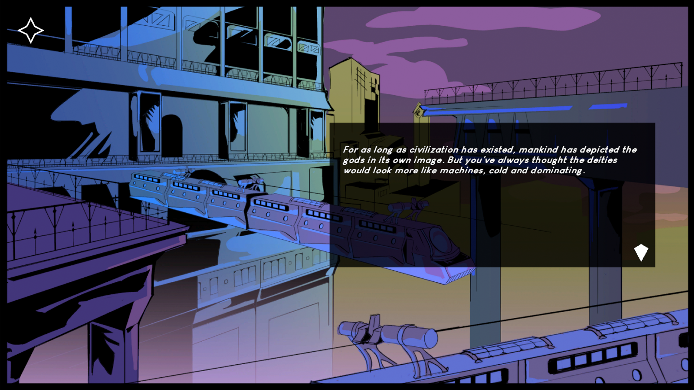
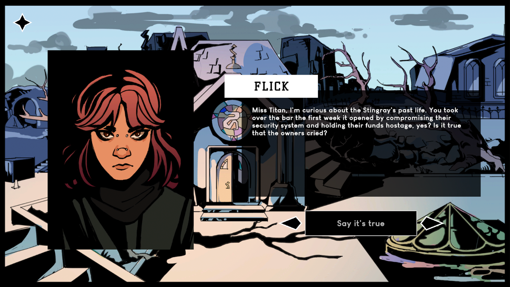
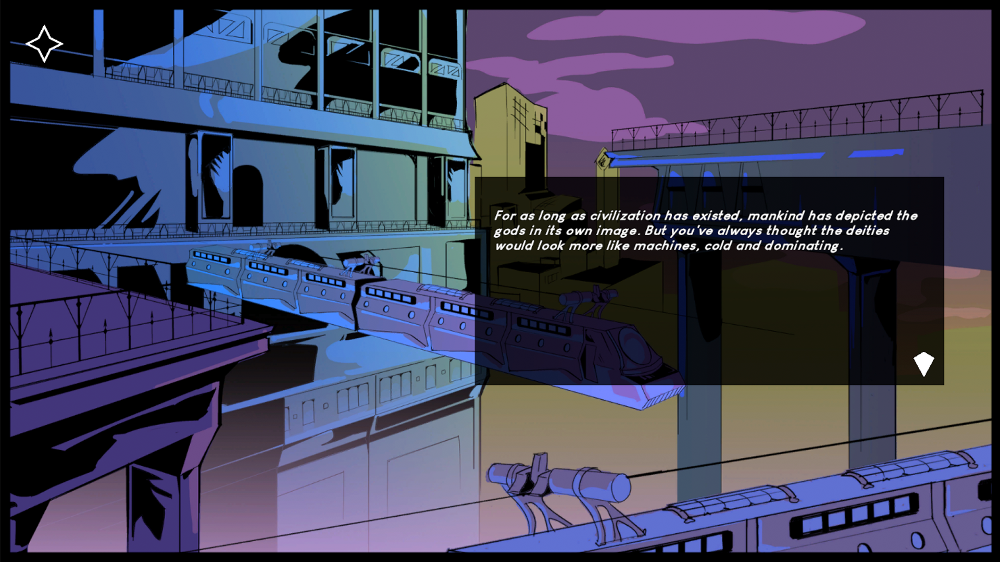

annota line
narrative design, programming, level design, ui/ux
A train heist against the gods.
Annota Line is an interactive fiction which I am solo developing as my senior capstone project. I built the game in Unity and created its dialogue system using Pixel Crushers. The game backgrounds were drawn by Ann-Marie Henderson.
Play as Serafin, an upstart gang leader in a decaying cyberpunk city, as she leads an unlikely team against the most powerful entities in every plane of existence. Navigate rich environments with classic point-and-click controls, explore a post-epidemic city ravaged by warring gangs, and untangle a web of drug-trafficking gods and profiteering politicians.
Annota Line was showcased at Wonderville in May 2025, GDC in March 2025, and Hex House in December 2024.
awards
NarraScope 2025 Best Student Game Selectionlinks
play the demo on itchwishlist on steam
watch the trailer
process
Before working in-engine, I created a design document to build out the world, characters, and major story beats of the game, as well as design pillars to keep the game cohesive. I then created the dialogue system in Unity using Pixel Crushers, and drafted the script in Tinychoice before editing and implementing it in-engine. The game has been playtested on a semiweekly basis and iterated on based on player feedback.

 




